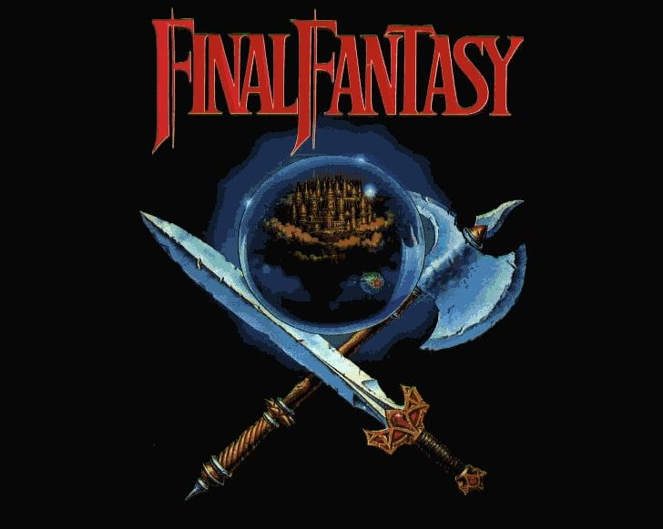

| Inicio | Entregas |
| Trailers | Contactos |

Final Fantasy es una saga popular de
juegos de RPG desarrollada por Square Enix.
Puede ser la saga más vendida de todos los tiempos, además se han hecho
juegos para consolas incluyendo desde las estándares hasta las portátiles,
pasando por un RPG online masivo, juegos para móviles, una película de animación,
hasta llegar a dos series de anime.
La primera entrega de la saga fue lanzada en Japón en 1987,
aunque los juegos de Final Fantasy han sido lanzados posteriormente
para los mercados de Norteamérica, Europa y Australia, en varias videoconsolas
modernas, incluyendo Nintendo Entertainment System, Super Nintendo Entertainment
System, Sony PlayStation, Sony PlayStation 2,
Game Boy Advance, Nintendo GameCube, PlayStation Portable, Xbox 360 y Nintendo DS.

Final Fantasy cuenta historias maduras de aventuras y fantasia. Mientras que los primeros juegos, hasta el VI
tienen una estética medieval, a partir de la séptima entrega, la saga tornó hacia la fantasía futurista, y
en recientes lanzamientos, se mezclan ambos estilos.
La mayoría de las historias relatan las experiencias de un grupo de héroes que deben enfrentarse a una
amenaza que pone en peligro a la existencia del mundo entero. Por otro lado el sistema de combate en evolucionó
del combate tradicional por turnos, al Active Time Battle, en el que cada personaje puede realizar acciones
según se llene una barra individual de acción. En las últimas entregas, como FF7 REMAKE, se ha obtado por un
sistema de acción en tiempo real, en el que el jugador tiene control pleno sobre los personajes.
La saga Final Fantasy ha sido una de las franquicias de videojuegos más importantes, emblemáticas e influentes
de toda la industria. Aunque no asento las bases del género de los RPG, si las afianzó, creando un estándar. A su vez
supuso el éxito de Square Enix, que después crearía otros RPGs emblemáticos, como Chrono Trigger y Super Mario RPG,
y también inspiró a otros desarrolladores.